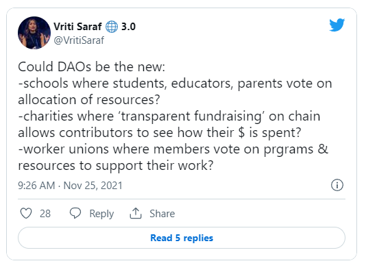
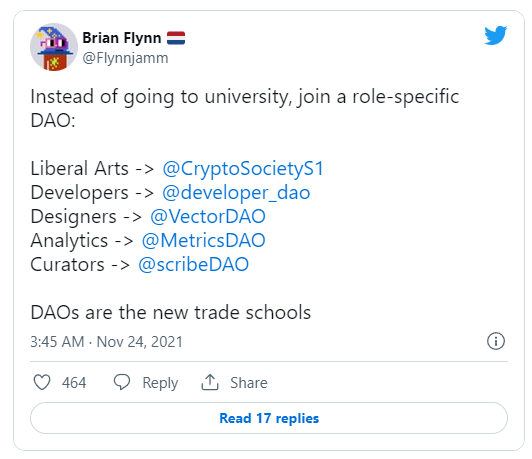
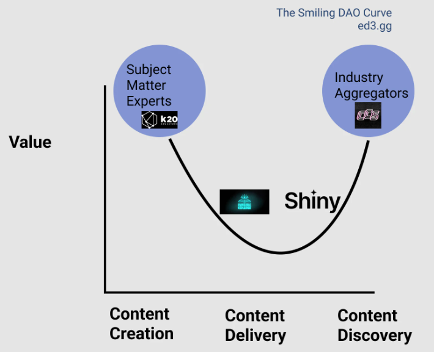
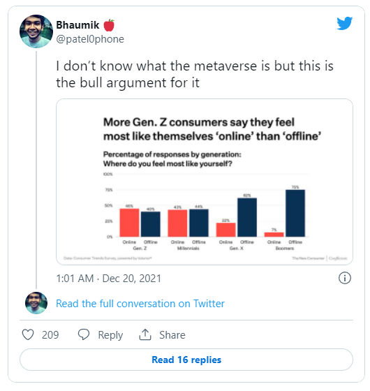
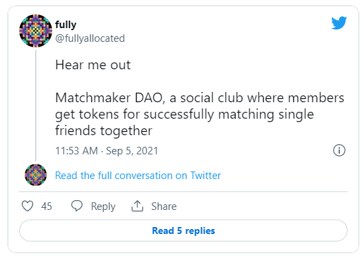

作者：Scott David Meyer |
翻译：dave lin |
校对：Shawn |
排版：Jeanne |
本文介绍了 DAO 的特点及优势，作者希望教育系统为未来的学习做好准备，文章介绍了在 Web3 的场景下，DAO 如何帮助教育发挥更大的价值，同时，列举了教育利用 DAO 形式的多种可能性，本文对于去中心化学习系统的建立，有借鉴和参考意义。
《从 web3 到 ed3 ：在去中心化世界中重塑教育》
《DeFi 如何改革学校的筹资模式》
01
改造者 DAO：非营利组织的心脏，合作经营组织的大脑以及股份有限公司（C-corp）的身体
长久以来，教育机构的运行效率一直很低。
无论是非营利公立学校还是私立独立大学，教育课程和学校基础设施完全是由该地区或学校领导层的质量所决定的。主要的利益相关者，包括家长、学生和教职员工，对于学校如何运作或教什么和怎么教鲜有发言权。对于国家考试分数或毕业率的期望往往会影响课程的实施。
长久以来，并没有太多的解决方案。即使是有最好的初衷和最好的教育模式，类似于微型学校、特许学校和任何其他创新的系统，也会被资金或是领导层的质量所掣肘。
让我们进入 DAO ，即去中心化的自治组织。
我们假设 DAO 将是教育机构的未来。
让我们从一些基础的背景开始。
DAO 是一种拥有共享资金库的社区。有人会认为 DAO 是进化的合作组织。DAO 与合作组织在理念上是类似的，这两种类型的实体都致力于为他们的社区带来价值和赋能。但是，DAO 是新一代的合作组织，原因如下：
⛓DAO 在映射到区块链的协议上运行，并且大部分运行都是自动化的。
💼 DAO 跨越了集体所有制、集体学习社区、社交俱乐部、内容策划和资产创造……而大多数的合作组织，只关注集体拥有的有形产品或资产，比如住房和商品。
图：
基础设施 @SyndicateDAO ✺, @wonderverse_xyz
, @viamirror🪞, @prtyDAO 🥳, @PrimeDAO_ , @juiceboxETH🧃
交易所 @Uniswap 🦄, @SushiSwap🍣
金融 @OlympusDAO🕊, @KlimaDAO🌳, @BabylonDao⏳, @templedao ☀️, @indexcoop🦉, @MakerDAO , @BadgerDAO 🦡
房地产 @creatorcabins🏠, @CityDao🌆
游戏 @AxieInfinity 🦇, @YieldGuild
交友约会 @madrealities🌹
摄影 @obscuradao 📷
音乐 @songcamp_ , @AudiusProject 🎧, @goodkarmadao
🏛 合作经营组织以 1 人=1 票的机制运作，而 DAO 有灵活性，可以通过各种代币和投票协议来创新治理结构。
💰 DAO 使用代币经济学创建分层激励结构，以满足各种个人兴趣，包括赚钱、学习、生产、推广、交际，一站式搞定。
图：
Web3 游戏规则：使用代币激励来引导新的网络。
（完整引用内容见推特）
上述四点对于 DAO 的运作至关重要，因为他们在透明的基础设施中，共同地平衡奖励与责任。
让我们来分析一下。
⛓ DAO 在区块链上运行
💰 DAO 可以利用代币经济学的优势

图：
DAO 会是：
学生、教育工作者、家长投票决定资源分配的，新型学校？
采用区块链“透明筹款”，允许捐款人看到善款去向的，新型慈善机构？
成员可以投票决定支持其工作的项目和资源的，新型工会？
02
学习 DAO 的诞生
第一个 DAO 成立于 2016 年，主要是用于进行投资，最终未获成功。DAO 的真正发展发生在 2021 年，因为技术、加密货币的金融设施和炒作，为 DAO 的发展创造了一个完美的飞轮。
经过几个月，甚至是几年时间的隔离和在线工作， DAO 对于人们来说就没那么神秘了。当然，我们可以在线上一起协调、工作、分享、社交和学习！到 2021 年初，各种 DAO 加在一起拥有近百万名成员，前 20 的 DAO 拥有价值 140 亿美元的数字资产。
2021 年 9 月，加密文化与社会（CCS）开辟了一条道路，并创造了“学习型 DAO ”（learning DAO）一词，创建了“加密通识文化”（liberal arts for crypto）。众多学习型 DAO 紧随其后，指出了一种创建去中心化学习中心的新方式。

图：
与其上大学，不如加入一个有特定角色的DAO：
通识课-> @CryptoSocietyS1
开发人员-> @developer_dao
设计师-> @VectorDAO
分析师-> @MetricsDAO
策展人-> @scribeDAO
DAO是新的职业学校
这种组织教育的模式指向一个未来，那就是新的学习中心将不会再是实体的中心。相反，学习者可以发起和拥有去中心化的学习中心，向所有人开放，让所有人享受到教育的普惠，包括世界上那 93% 的没有上过高中的人。
图：
/1 DAO 正在促成一个这样的未来，学生将共同拥有和集体治理他们的学校，学习者和教育者通过持有同样的代币获得一致的激励。
这些学习型 DAO 将会是数字原生的、以学习者为中心的，并具有适应性。
（完整引用内容见推特）
不难看出，DAO 是我们现有教育体系的下一个进化方向。
03
DAO 是一种新的教育模式
正如我们在《从 Web3 到 Ed3》中指出的，DAO 将为去中心化的教育体验，提供关键的基础设施。这是一种聚集和奖励教师和学习者的能力，这种能力将会重塑我们提供教育的方式和地点。
DAO 可以作为去中心化的学习中心。学生可以加入一个社区去学习任何他们感兴趣的主题。然后，他们可以应用他们的知识，为 DAO 工作，在这个过程中赚钱。
DAO 也让我们离真正的个性化学习更进一步。例如，一个雄心勃勃的年轻艺术家，可以与其他艺术家联系和合作，并从同行实时的反馈中获益。另外，一个学术性很强的年轻女性，也可能在与志同道合的工程师们呆在一起时，感觉更好。他们可以分享进行研究的技巧，并参与到各种的提案或任务中。内在动力成为了常态，我们可以摒弃所有胡萝卜加大棒的过时模式。
当然，我们认识到这需要花费精力和学习者的积极性。最有可能的结果是一系列的选择。正如在 Ed3 的世界经常出现的情况一样，答案是：“是的，而且……”。DAO 可能会创造新的教育模式，或者只是使现有的模式更加强大。
以下是可能发生的几种方式。
1. DAO 是细分学院或元大学
大学的模式通常被细分为学院。每个学院都有一个专业领域，大学作为一个整体将这些学院聚集在一起，这样学生就可以获得跨学科的信息。
DAO 完全有能力去改进这一模式。
正如在《战略 DAO 框架》中指出的微笑 DAO 曲线，DAO 将作为一个非常具体细分市场或行业聚合器的主题内容专家，来提供最大的价值。

2. DAO 是主题内容专家
DAO 可以比一般的学院更进一步、更深入地细分。
如果有人想学习摩洛哥古建筑，就可以创建一个联结专家讲师和感兴趣的学生的 DAO 。这种模式的力量在于教师不需要是一个广泛的学科专家，甚至不需要是全职的教授。相反，是最合适的人在一个特定时刻带来最好的指导。
与现有的学院相比，这种方式提供了独特的优势，因为现有的学院受到地理知识和学生的限制，学生首先得是被大学录取的才行。
同样的概念也适用于 K-12 教育。DAO 可以作为接受世界各地学生的微型学校。学生可以为某一特定主题一起在线上学习。这对于没有机会接受教育，或是所在学校没有他们感兴趣课程的学生来说，是一个强有力的补充。
进一步说， DAO 学校甚至可以用自己的代币来激励教育。Dexter正在试图这样做。
Dexter 是一所位于德克萨斯州 Witchita Falls 被认可的 K-12 STEAM 学校。他们还不是一个 DAO ，但是他们正在努力构建“去中心化的教育体验”。学生可以获得符合高中要求的可转移学分。如果要参加考试的话，学生需要使用 DEX 币（DEXcoin），学生可以通过完成任务和家庭作业来获得 DEX 币（DEXcoin）。
3. DAO 是行业加速器
DAO 可以汇总各个主题领域的知识。通过 DAO 与 DAO 的合作关系、子 DAO（SubDAO）或是通识教育的方法，DAO 可以将各种主题纳入学习路径中。学生可以在专家指导下选择他们的冒险旅程。
基于合作关系的力量，无论学生对哪一领域的学习感兴趣，DAO 都能够迅速在该领域拥有更大的广度和深度。智能合约的发展，意味着即使像单个讲座那样原子化的任务，也可以在全球范围内招募人才来完成。同样，学生也可以灵活地为单个讲座、课程或整个课程项目付费。
“跨越微笑曲线”的灵活性将 DAO 和传统学习中心区分开。
4. DAO 是学生俱乐部和社交中心
对于我们中的许多人来说，我们在大学期间的关系和经历是我们记忆最深刻的东西。DAO 提供了一种与世界各地的人联系和交朋友的方式。
对于我们这些亲身参与学习，并享受了学生俱乐部、宿舍生活和校园冒险的人来说，这可能是个糟糕的替代品。但事实上，绝大多数学生是没有这种经历的。超过 70% 的学生是非传统的，近一半的美国人是没有中学学历的（再加上世界各地那 93% 的人）。
除了大多数学生没有经历过“传统的”大学生活以外，今天的学生觉得他们自己更适合线上而不是线下。DAO 就非常适合这些学生。他们可以做自己，与志同道合的学生建立联系，并向世界各地的同龄人学习。这确实是美丽新世界。

图：
我不知道元宇宙是是什么，但是这是一个超强的证据。
更多的 Z 世代消费者表示比起“线下”，更愿意待在“线上”。
（完整引用内容见推特）
正如 Kassen Qien 所指出的，“人们通常加入[大学]俱乐部，是为了 1）遇见兴趣相投的人 2）为职业发展优化简历…… DAO 使用 Discord 的频道来满足某些兴趣（艺术、游戏等）。如果我们把 DAO 本身看作是利用社交/社区代币的俱乐部的话，参与者将（至少在经济上）被激励，为组织的长期可持续发展做出贡献，甚至是在他们“毕业”之后。
当然，还有大学经历的最后一块：约会。这是一个许多人找到他们伙伴的地方（包括普通朋友和终身伴侣）。如果说我们在过去几年学到了什么，那就是人们是可以在线上认识和约会的。（只要你不看新的奈飞纪录片的话）（译注：纪录片指《 Tinder 诈骗王》）

图：
听我说
Matchmaker DAO，是一个社交俱乐部，会员可以通过成功交友而获得代币。
（完整引用内容见推特）
幸运的是， Qien 也为此找到了一个潜在的解决方案。DAO 可以促进约会和感情关系。“ DAO 可以为其成员建立配对的工具。他们还可以举办共同的聚会去混搭某些 DAO （例如 Flamingo x PleasrDAO ），类似一系列有助于认识更多人的兄弟会和姐妹会的混合聚会。”
我们当中的大多数人会说， DAO 和线上的经历不能取代“真实的”大学体验。然而，鉴于这种经验对世界上绝大多数人来说是遥不可及的，DAO 和 ed3 是一种使这种社会经验大众化——也许是改进——的方法。
04
DAO 帮助人类繁荣发展
DAO 将资金的力量带给社区。社区使用这种力量的方式是无限的。
学习型 DAO 只是第一步。在不久的将来，随着有好奇心的个体和热情的教师建立联系，预计会有更多的学习和教育的实验。教育的目标是促进人类的繁荣。DAO 将会帮助更多的人通过个性化的教育实现繁荣。
THE END